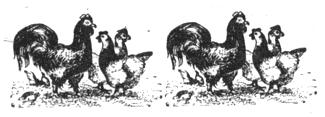

If you raise chickens, and believe-as my family and I do-that ranging the birds is both more healthful (for them) and less expensive (for you) ... you may want to consider building a simple, made-from-scrap poultry run extension similar to the one we've devised.
Some folks prefer to let their flocks roam completely free ... but we've learned (the hard way!) that our hungry cluckers dearly love to scratch in newly planted gardens, and can also devour formidable quantities of fruit from our strawberry patch in nothing flat. Furthermore, local predators-a class in which dogs are definitely included-seem to keep a special place in their hearts (and stomachs) for on-the-hoof chicken meat. So we first built a permanent run around our poultry shelter ... and then, when the time came to introduce new members to our feathered "herd", we decided to find a way to provide additional protected grazing room.
After a bit of experimentation, we came up with the easy-to-make add-on design that you see here. In essence, it's really nothing more than two (or more) tunnel-like wire cages laid end-to-end, extending outward from an opening cut into our existing pen. Makeshift? Sure ... but it was virtually. free, and is as effective as any more elaborate contrivance!
The two basic "ingredients" used to build our chicken enclosure are 2 X 4's (anything smaller won't be sufficiently sturdy) and poultry netting. Now it's been my observation that most homesteaders have a few scraps of each of these materials stashed somewhere . . . but if you do need to buy the items, you should be able to find some on sale, or purchase them used at a salvage yard or flea market. In any case, try to pick lumber that can easily be cut to match the width of the wire mesh you've located. Our netting, for example, was 48 " wide, and our 2 X 4's were 8 feet long, so we were able to simply cut each board once to get two usable lengths.
The other supplies you'll need are lightweight wire cutters ... a handful of twist ties (the kind that come with trash bags) or some twine or baling wire ... a dozen or so wooden stakes-each about 1" wide by 6 " to 8 " long and sharpened at one end-gathered from your kindling basket or split from scrap lumber ... and a heavy-duty staple gun and staples (a hammer and some old-fashioned "pound 'em in" fence staples will work fine, too, but won't be as easy to use).
To make a single section of run (using the same dimensions we did), first cut each of a pair of 2 X 4's to equal the width of your chicken wire. Then use the cutters to snip off a full-width, 78"Iong strip of poultry netting ... align one 48" end of the mesh along the broad side of a 2 X 4 (as shown in the photo) ... staple the wiring in place, inserting the fasteners in a more or less random pattern over the entire width of the lumber ... and then attach the opposite 48" end of the mesh to the other 2 X 4 in the same fashion.
Now, you're ready to assemble the run extension. First, decide where on the existing fence you want to fasten the addition. Then snip a flap-centered on that spot-in the wire from the ground up. Make the hole about 12 to 18 inches square, but leave the top intact to serve as a "hinge" for the cutout flap.
Next, simply position the two 2 X 4's on their narrow edges, parallel to each other on either side of the door and perpendicular to the opening, as far apart as the tunnel is to be wide. Then, using twist ties, fasten the new wire to the existing fence so that the netting forms an arc above the exit. (At its highest point, the "roof" should be about 24 inches from the ground.)
Once you've married the ends of the extension fencing around the opening in the coop "wall", check the positions of the boards again to be sure they're precisely parallel and the proper distance apart . .. and then pound a pair of stakes-one on each side of the lumber-a few inches in from each end of both boards (you'll use, four pairs of stakes in all). These spikes will hold the 2 X 4's firmly in place.
Finally, "sculpt" the cage into a Quonset hut shape by carefully pulling, pushing, and otherwise encouraging the mesh to take on an arclike configuration, from one end of the tunnel to the other.
If you want to install more sections to lengthen the enclosure, simply butt each "new" pair of boards up against the "old", fasten the wire ends together, and stake the additional 2 X 4's in place.
You can make as many of these sections you like (if you use 48" mesh and position the boards 4 feet apart, each one will provide approximately 16 square feet of space), but you'll eventually need to close off your run extension with an endpiece. To do so, simply staple a 26"-Iong swatch of poultry netting to a single 2 X 4 (again, the length of the lumber should match the width of the wire). Position the end board perpendicular to, and tight against, the two open 2 X 4's, pound in a stake or two to hold the crosspiece fast, and attach the 26" length of nettting across the hole. Fasten the wire together at the top of the tunnel first, and then fit and twist-tie the mesh around the curve of the arc.
Voila! You've just made yourself a handy, portable poultry corral ... and your chickens will love you for it! It won't take your herd of cacklers long to find their fresh pasture, either, especially if you "salt" it with cracked corn or dandelion greens. And after a while-when the birds have picked over the area-you can simply take off the twist ties connecting the run to the extension ... and you and a partner can (carefully) lift and move as many as two sections of the tunnel at a time to a new area! (Be sure to wire the door flap back in place after moving the run ... and you may also want to broadcast grass seed on the scratched-over area, so the ground will be well covered with lush pickings the next time you graze your chickens on it.)
Chances are you'll soon discover other uses for your portable run, too. If you attach crosspieces and netting to both ends, for instance, the contrivance will make a terrific freestanding cage for protecting garden plantings from seedrobbing birds and nibbling rabbits. And we've found that a single section makes a fine in-coop "playpen" for chicks that are not yet old enough to be introduced to the rest of the flock.
Of course, I'm not claiming that my invention is the prettiest ever devised-and it is only a temporary structure-but when you're short on time, money, and elbow room for your chickens, a little "tunnel vision" (plus some poultry wire and 2 X 4's) can go a long way.
|
 [1] First, staple one 48"" end of the cut poultry wire to the broad side of a 2 x 4, and suffix the opposite end along a second broad. [2] Cut a hole in the existing fence and fasten the new wire around the opening with twist ties. [3] Make sure the 2 x 4's are parallel before staking them in position. [4] A little hands-on ""persuasion"" will give the run a Quonset hut shape. [5] Chickens are quick to discover greener pastures. |
|
|